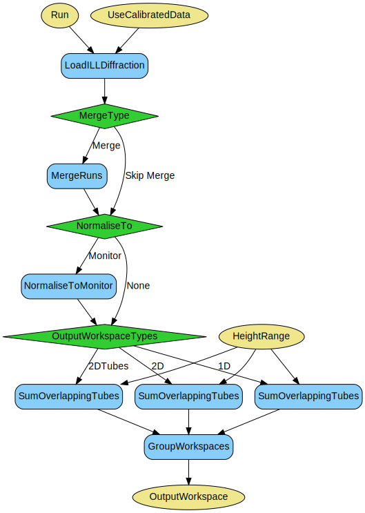

\(\renewcommand\AA{\unicode{x212B}}\)
PowderILLDetectorScan v1¶
{kind=link}
PowderILLDetectorScan dialog.¶
Summary¶
Performs powder diffraction data reduction for D2B and D20 (when doing a detector scan).
See Also¶
Properties¶
Name |
Direction |
Type |
Default |
Description |
|---|---|---|---|---|
Run |
Input |
list of str lists |
Mandatory |
File path of run(s). Allowed values: [‘nxs’] |
NormaliseTo |
Input |
string |
Monitor |
Normalise to monitor, or skip normalisation. Allowed values: [‘None’, ‘Monitor’] |
CalibrationFile |
Input |
string |
File containing the detector efficiencies. Allowed values: [‘nxs’] |
|
Output2DTubes |
Input |
boolean |
False |
Output a 2D workspace of height along tube against tube scattering angle. |
Output2D |
Input |
boolean |
False |
Output a 2D workspace of height along tube against the real scattering angle. |
Output1D |
Input |
boolean |
True |
Output a 1D workspace with counts against scattering angle. |
CropNegativeScatteringAngles |
Input |
boolean |
True |
Whether or not to crop the negative scattering angles. |
HeightRange |
Input |
dbl list |
A pair of values, comma separated, to give the minimum and maximum height range (in m). If not specified the full height range is used. |
|
OutputWorkspace |
Output |
WorkspaceGroup |
Mandatory |
Output workspace containing the reduced data. |
InitialMask |
Input |
number |
20 |
Number of pixels to mask from the bottom and the top of each tube before superposition. |
FinalMask |
Input |
number |
30 |
Number of spectra to mask from the bottom and the top of the result of 2D options. |
ComponentsToMask |
Input |
string |
Comma separated list of component names to mask, for instance: tube_1, tube_2 |
|
ComponentsToReduce |
Input |
string |
Comma separated list of component names to output the reduced data for; for example tube_1 |
|
AlignTubes |
Input |
boolean |
False |
Align the tubes vertically and horizontally according to IPF. |
Description¶
This algorithm performs the data reduction for the D2B instrument at the ILL, and also for D20 when doing a detector scan.
Input Runs¶
Provide the list of the input runs, that is the runs corresponding to a single detector scan, following the syntax in
MultipleFileProperty. Note that for this algorithm 508093:508095
and 508093-508095 would be equivalent; in either case it will load and process the runs separately and then finally merge them with SumOverlappingTubes.
Calibration¶
The NeXus files for D2B contain raw data and pre-calibrated data. Either of these can be used when loading. Note that, when reading the calibrated data, the even-numbered tubes will not be flipped, since they are flipped in the nexus files already.
Normalisation Options¶
The default is for normalisation to monitor, in which case the counts will be scaled up by 10ˆ6 after dividing by monitor counts.
Output¶
The output from the algorithm is a WorkspaceGroup, containing the requested
outputs:
Output2DTubes - Outputs a 2D workspace of tube height against scattering angle. In other words with no correction for Debye-Scherrer cones. It is expected that this is only used for checking alignment.
Output2D - Outputs a 2D workspace of height along tube against scattering angle for pixel in tube. Here there is effectively a correction for the Debye-Scherrer cones.
Output1D - Outputs a 1D workspace of counts against scattering angle. The vertical integration range for this is set in the
HeightRangeoption.
Note for D20 only the Output1D option will be relevant.
For Output2DTubes only the negative scattering angles are included, they are excluded for Output2D and
Output1D.
Use SaveFocusedXYE to save in FullProf format #10, or SaveGSS for GSAS format.
Workflow¶
Usage¶
Example - PowderILLDetectorScan
red_ws = PowderILLDetectorScan(Run='508093:508095', Output2DTubes=True, Output2D=True, Output1D=True)
print("'2DTubes' output workspace has {0} diffractograms having {1} bins each".format(red_ws[0].getNumberHistograms(), red_ws[0].blocksize()))
print("'2D' output workspace has {0} diffractograms having {1} bins each".format(red_ws[1].getNumberHistograms(), red_ws[1].blocksize()))
print("'1D' output workspace has {0} diffractograms having {1} bins each".format(red_ws[2].getNumberHistograms(), red_ws[2].blocksize()))
Output:
'2DTubes' output workspace has 128 diffractograms having 3024 bins each
'2D' output workspace has 128 diffractograms having 3024 bins each
'1D' output workspace has 1 diffractograms having 3024 bins each
Categories: AlgorithmIndex | ILL\Diffraction | Diffraction\Reduction
Source¶
Python: PowderILLDetectorScan.py